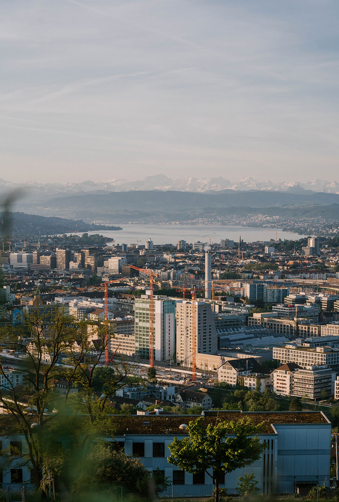

Digitales Gästebuch
Ich zeige dir im «Züribuech» die besten Aussichtspunkte in und um Zürich. Und nicht vergessen, lade auch Dein eigenes Foto hoch.

Ich zeige dir im «Züribuech» die besten Aussichtspunkte in und um Zürich. Und nicht vergessen, lade auch Dein eigenes Foto hoch.

Die Aussichtspunkte sind auf der Karte verteilt. Navigiere dich durch die Karte und klicke die Punkte an.